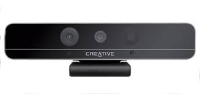
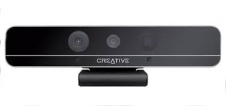
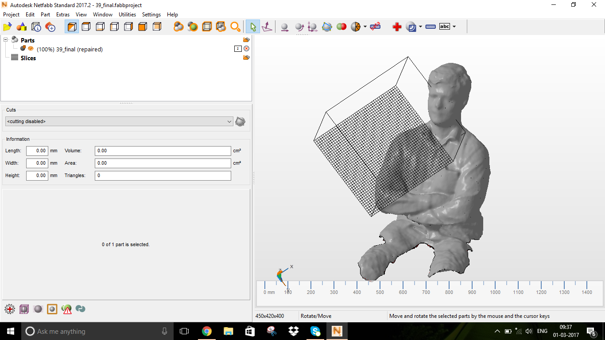
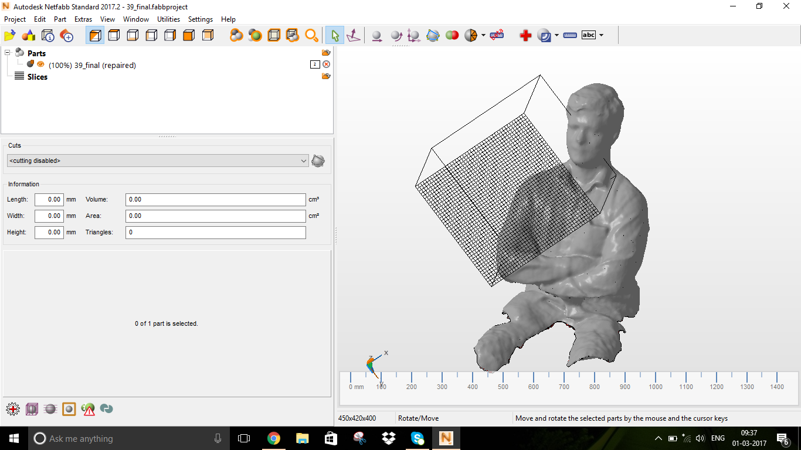

What is 3D Printing ?
3D printing, also known as additive manufacturing (AM), refers to processes used to synthesize a three-dimensional object in which successive layers of material are formed under computer control to create an object.Objects can be of almost any shape or geometry and are produced using digital model data from a 3D model or another electronic data source such as an Additive Manufacturing File (AMF) file.
3D printed object sample(source:google)
History of 3D Printing
The earliest 3D printing technologies first became visible in the late 1980’s, at which time they were called Rapid Prototyping (RP) technologies. This is because the processes were originally conceived as a fast and more cost-effective method for creating prototypes for product development within industry. As an interesting aside, the very first patent application for RP technology was filed by a Dr Kodama, in Japan, in May 1980. Unfortunately for Dr Kodama, the full patent specification was subsequently not filed before the one year deadline after the application, which is particularly disastrous considering that he was a patent lawyer! In real terms, however, the origins of 3D printing can be traced back to 1986, when the first patent was issued for stereolithography apparatus (SLA). This patent belonged to one Charles (Chuck) Hull, who first invented his SLA machine in 1983. Hull went on to co-found 3D Systems Corporation — one of the largest and most prolific organizations operating in the 3D printing sector today.
3D Systems’ first commercial RP system, the SLA-1, was introduced in 1987 and following rigorous testing the first of these system was sold in 1988. As is fairly typical with new technology, while SLA can claim to be the first past the starting post, it was not the only RP technology in development at this time, for, in 1987, Carl Deckard, who was working at the University of Texas, filed a patent in the US for the Selective Laser Sintering (SLS) RP process. This patent was issued in 1989 and SLS was later licensed to DTM Inc, which was later acquired by 3D Systems. 1989 was also the year that Scott Crump, a co-founder of Stratasys Inc. filed a patent for Fused Deposition Modelling (FDM) — the proprietary technology that is still held by the company today, but is also the process used by many of the entry-level machines, based on the open source RepRap model, that are prolific today. The FDM patent was issued to Stratasys in 1992. In Europe, 1989 also saw the formation of EOS GmbH in Germany, founded by Hans Langer. After a dalliance with SL processes, EOS’ R&D focus was placed heavily on the laser sintering (LS) process, which has continued to go from strength to strength. Today, the EOS systems are recognized around the world for their quality output for industrial prototyping and production applications of 3D printing. EOS sold its first ‘Stereos’ system in 1990. The company’s direct metal laser sintering (DMLS) process resulted from an initial project with a division of Electrolux Finland, which was later acquired by EOS.
Other 3D printing technologies and processes were also emerging during these years, namely Ballistic Particle Manufacturing (BPM) originally patented by William Masters, Laminated Object Manufacturing (LOM) originally patented by Michael Feygin, Solid Ground Curing (SGC) originally patented by Itzchak Pomerantz et al and ‘three dimensional printing’ (3DP) originally patented by Emanuel Sachs et al. And so the early nineties witnessed a growing number of competing companies in the RP market but only three of the originals remain today — 3D Systems, EOS and Stratasys.
the 1990’s and early 2000’s a host of new technologies continued to be introduced, still focused wholly on industrial applications and while they were still largely processes for prototyping applications, R&D was also being conducted by the more advanced technology providers for specific tooling, casting and direct manufacturing applications. This saw the emergence of new terminology, namely Rapid Tooling (RT), Rapid Casting and Rapid Manufacturing (RM) respectively.
In terms of commercial operations, Sanders Prototype (later Solidscape) and ZCorporation were set up in 1996, Arcam was established in 1997, Objet Geometries launched in 1998, MCP Technologies (an established vacuum casting OEM) introduced the SLM technology in 2000, EnvisionTec was founded in 2002, ExOne was established in 2005 as a spin-off from the Extrude Hone Corporation and Sciaky Inc was pioneering its own additive process based on its proprietary electron beam welding technology. These companies all served to swell the ranks of Western companies operating across a global market. The terminology had also evolved with a proliferation of manufacturing applications and the accepted umbrella term for all of the processes was Additive Manufacturing (AM). Notably, there were many parallel developments taking place in the Eastern hemisphere. However, these technologies, while significant in themselves and enjoying some local success, did not really impact the global market at that time.
Read MoreLet's go to the 3D Scanning
3D Scanning
Importance of the 3DScanning
The 3D Scanning the process which is videly being used in the feild of Reverse Eningneeringwhich is also called as the Back Engineering process where we will produce the modles of the engine parts or any objects 3d model where the exact blueprint is not available
 
Kinnect and real sense
Kinect Sensor
Kinect is a line motion sensing input device developed by Microsoft for the Xbox 360. It uses a system consisting of an infrared projector and camera and a special microchip that generates a grid from which the location of a nearby object in 3 dimensions can be ascertained. The device features an RGB camera, depth sensor and multi-array microphone running proprietary software, which provide full-body 3D motion capture, facial recognition and voice recognition capabilities. Kinect requires the appropriate drivers to be installed on the system. You can down load them from the Microsoft website. Choose the driver appropriate for your system and install them. Additionally you also need a 3D scanning software for scanning. here
Kinect needs be externally powered and We have experienced sensor unavailability issue a few times.It gives good depth resolution and is pretty fast. But it has a large minimum resolution distance less than which it will be unable to scan the objects very near to it.
Before we start the scanning process it was abit difficult to place that to take the selfi shots and the placing height was a problem the me and my friend rahul thought to design the holder for the Kinect to be placed on the tripod stand of the camera.Then we had problem in measuing the base and desiging the base but we had good designs drawn on paper but there is no time to play with it .then suddenly we got to remember about the thingeverse community and went and searched for the kinect base holder we have found a aligent design there so we printed it and fially our kinect tripod holder is built,then we tought what we could do for the rotating base to take the 3D selfi. Then we decided to remove the handles and back rest of the office chair for the rotating base
Intel RealSense
Intel realsense is a depth perception camera, that is developed for communicating with the computer via gestures, the hardware components of the kinect and realsense are similar. They both have an RGB camera, an infrared laser projector, an infrared camera and an arrays of microphones. Realsense also need their proprietary drivers, download and install them from the Intel website. In my experience, Real sense was difficult to work with. it did not work on some laptops and the device did not load properly, even after repeated installations. Downloading drivers from the Intel website is not straight forward, you have to create an account and register your product before you can begin downloading drivers.
we used it to test run the product. We tried to scan a person’s head and create a 3D model but what we found was that the range of the device is very small. You have to sit very close to the sensor to be able to get a good scan. We used Intel’s software which given not good results so we desided not to go with
3D printed kinect holder,Kinect on the tripod stand and the rotating chair
you can download the kinect tripod holder click HereScanning Using Kinect using the kscan3D
This is awesome cool free software for scanning the onjects and taking 3D Selfis this was introduced to me by Mr.Rahul S Rajan and i helped him to take his 3D Selfi and he helped me to make my 3D selfi thus we helped each other and come up with good models
The way it works is that you have to first keep the object in front of the sensor and click scan. Then the software captures a snapshot of the object and the 3D data. Now you have to rotate the object a certain degree and then click scan again and then a new snapshot will be taken. The software then attempts to align these two meshes to create a part of the object.
KScan3D Software usage screens
 
NetFabb editing screens
We have made the scanning using this software but still there were some complicated issues like the whole head was not being scanned so we want to check with other software
Skanet was an easy install and the software worked properly, It is very easy to get started when compared to the Kscan3D,i have installe this software and i have easily learned on my own ,but the free version of the software we used so the processing done good but the final saving is being in low resolution
GIF describing the Workflow of the skanet (Scanned my fab manager Mr.Vinod Kumar B.G)
In the first step you have to set your bounding box and the nature (size and orientation) of the item which will be scanned. In the next step place the object in front of the sensor and click record.It will start capturing the 3D data and now either rotate the object of the sensor 360 degrees. The scanned portions will be in green and the rest will be in red. Be careful of moving the sensor too fast as it will lose tracking and you will have to go back to the last position where you lost the tracking.
Now in the Reconstruct tab, the software will create the mesh based on the captured data. You can now see the full 3D mesh. In the process tab you can process the data fro printing, It will create a manifold design and fill holes in the model.The low resolution model will exported in the last step
Now finally the third software for the 3d scanning i have used is Reconstructme is another free software, that I tried, it’s a bit difficult than skanet and the user interface is not friendly. There is less graphical cues to guide the user and there is no live preview. You have to first input your settings and click scan and the object will be scanned with the settings. The main difficultly I had with reconstructme was that it lost tracking quite often which makes It unsuitable for hand held scanning.
I really like in reconstructme was that option for selfiescan. In which a person sat infront of the sensor and turned around a full 360 and the software would map the 3D profile. This worked well enough and the 3D model it generated is acceptable. There was a problem for this is that the box confined and there were some minute issues misalignment in the textured model, where the colour reproduction was a bit off. But for a free software it is good enough
Group Assignment
Testing the Design rules of 3D printer
Understanding our 3D printers limitation is the most important thing because this may reflect the actual print quality of our prototypes/products. One of the main parameters is the resolution, it determines the quality of print. I found in Make magazine website regarding a shootout called Digital Fabrication Shootout they have ranked different manufacturers 3D printers. We have downloaded a test print model from thingiverse and is shown below with the test parameters.
You can download the test file from the Link
After downloading the file opened the .STL file in cura and printed in Ultimaker2 3D printer. It tooks 30 minutes to print the file in Ultimaker. we printed two times to check the quality of the spool
Initial visual inspection was carried and found it was a fine print. We made a deatiled measurements physically then only we have conclude the results. Here is
test results.
Test Results We have asked to do design and 3D print a small object which cannot be manufactured through subtractive manufacturing.i started using the solidworks to design my model as i have not used the solidworks in the second week
so i have desided to design a simple model using the SolidWorks and as per the instructions the design should be small and which can't be made on the subtractive manufacturing
GIF describing the Workflow of the 3D object Designing
you can download this weeks design files here There are various methods of 3D Printing coming in the industry some of them are here
We have two 3D printers in our lab one is Ultimaker2 3D printer and Dimension SST1200es which is a soluable support technology printer. which work on the principle of Fused deposition modelling Ultimaker 2 is a FDM based 3D printer by Ultimaker It comes equipped with a heated build platform and
can print at a resolution of up to 20 microns. It supports both PLA and ABS and can print at a speed of 300 mm/s. It is having a build volume of 223 mm X 223 mm X 205 mm. Cura is an open source
slicing software for ultimaker.Download manual here
Ultimaker 2 3D Printer
Dimension 3D printer is another printer which is working on FDM method and is a soluable support type printer by one of the pioneers "Stratasys"
It is a ABS plastic based printer. These type of printers are soluable support type 3D printers . Support structures were early solutions to problems stemming from gravity these are some
rigid structures erected in a lattice next to the object being printedand can be breakout after the print. Supports are extra material that act as “scaffolding” to hold a design in place if there is nothing beneath it to build on.
Depending on your design, supports may needed to prevent filament from drooping when it’s printed, but after the print is complete, the supports can be broken off and cleaned up to leave you with your final design.
In most cases, the supports are automatically generated by the slicing software that converts our STL file into a format the 3D printer can read, called G-code. In Soluable support technology a seperate apparatus is used to remove the support structure
from the printed parts. The finished part is dipped in a chemical filled inside the appartus and boiled after a few hours the support material will be dissolved in the tank and will get the actual
part. We have Support cleaning Apparatus SCA1200HT with our 3D printer. Download manual here
Dimension SST1200es 3D Printer
Cura is the software which we used to convert the 3D model into G code which the machine can understand.Which is designed by the Ultimaker for its 3Dprinters, Using cura we can slice the 3D model into a series of layers, which will be printed one at a time. We have many setting we can change like the layer height, fill density, support density and type etc.
To start 3D printing we have to Open our .stl file in Cura, now you can see your model on your print bed. You can move it around and scale it up or rotate it. In the settings pannel, you can change thelayer height, the fill density, the support type and density.
once all the settings done check the estimated time also to get an estimate of printing time once all set click save to removable drive and insert the drive in the machine to start printing.
cura settings
The minimal settings required to be done we should check the calibrayion of the printer if we are printing for the first time ,if the calibration is not good we have to adjust the printer base and then we need to load the 3d printer filament spool\
where we will click the change material using the roatating button and as per the instructions we load the filament and we select the required model gcode and start the printing for my print it took approximately 45mins
we have a major issue with the hydrated spools as they were bought one and half year ago and some were open as usually used one.and when ever we give pause between the printing the spool loading
gear used to scrap the spool and which used get effected very time we have to manually remove the spool back and reload the required colour
you can see the dent in the spool
we used to remove this by loosing the drive gear mechanisim and that small black box in the back from which we load the spool Finally here the 3D Printed part !! Now here we comes to the Hero Shot of the 3D model printed
Finally my 3D printed object
© 2017, made with by scitechindian This work done by SYED JUNAID AHMED is licensed under a Creative Commons Attribution-NonCommercial-ShareAlike 4.0 International License.
Sl.No
Paremeters
Visual Inspection
Physical Inspection
1
size: the object is 2x50x30mm (baseplate)
Size is OK, small warphage at corners
1.6X48.83X28.9mm
2
hole size: 3 holes (5/4/3mm)
Visually OK
5mm circle -> 4.67 mm,
4mm circle -> 3.7mm,
3mm circle -> 2.6 mm
3
Nut size: M4 Nut should fit perfectly
Visually OK
Can't fit the nut(deviation=1.2mm) Hole dia 6.6mm,Nut dia 7.8mm
4
fine details: pyramide, cone, all numbers
Visually OK
Minor deviations
5
rounded print: wave, half sphere
Visually OK
Printed correctly
6
minimum distance & walls: 0.1/0.2/0.3/0.4/0.5/0.6/0.7mm
Visually OK with minor defects
Exact measurements not taken but visually all printed
7
overhang: 25°/30°/35°/40°/45°
small breaks in walls
Visually verified,OK
8
bridge print: 2/4/8/16/mm
Visually OK
2/4/8mm came correctly,16mm easily brokened
9
surface: all the flat parts
Visually OK
Small warphage at corners
3D Desiging
3D Printing
Ultimaker 2 3D Printer
Dimension SST1200es 3D Printer
Rules for 3D printing
Using Cura
Setting the 3Dprinter
Trouble shooting

Hero Shot
Conclusion